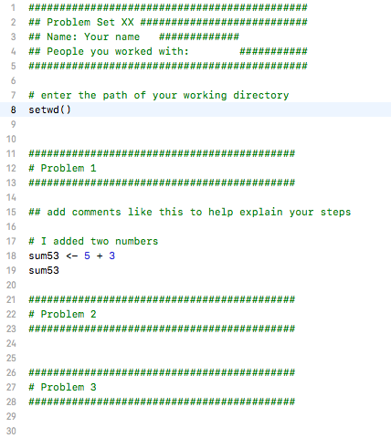

5 + 3[1] 85 - 3[1] 25^2[1] 255 * 3[1] 155/3[1] 1.666667(5 + 3) * 2[1] 16This document will include important links and course notes for Experimental Methods in Political Science.
Goal
By the end of the first week of the course, you will want to have R and RStudio installed on your computer (both free), feel comfortable using R as a calculator, and making documents using the R Markdown file type within RStudio.
R is an application that processes the R programming language. RStudio is also an application, which serves as a user interface that makes working in R easier. We will primarily open and use RStudio to work with R.
In other classes, you may come across Stata, SPSS, Excel, or SAS, which are programs that also conduct data analysis. R has the advantage of being free and open-source. Even after you leave the university setting, you will be able to use R/RStudio for free. As an open-source program, it is very flexible, and a community of active R/RStudio users is constantly adding to and improving the program. You might also encounter the Python language at some point. R and Python have similarities, and learning R can also make learning Python easier down the road.
R and RStudio Installation
This next section provides a few notes on using R and RStudio now that you have installed it. In this section, we cover the following materials:
<-setwd() function.RStudio is an open-source and free program that greatly facilitates the use of R, especially for users new to programming. Once you have downloaded and installed R and RStudio, to work in R, all you need to do now is open RStudio (it will open R). It should look like this, though your version numbers will be different:

Note: The first time you open RStudio, you likely only have the three windows above. We will want to create a fourth window by opening an R script to create the fourth window.
Now you should have something that looks like this:

The bottom left window in your RStudio is the Console. You can type in this window to use R as a calculator or to try out commands. It will show the raw output of any commands you type. For example, we can try to use R as a calculator. Type the following in the Console (the bottom left window) and hit “enter” or “return” on your keyboard:
5 + 3[1] 85 - 3[1] 25^2[1] 255 * 3[1] 155/3[1] 1.666667(5 + 3) * 2[1] 16Again, in the other RStudio windows, the upper right will show a history of commands that you have sent from the text editor to the R console, along with other items. The lower right will show graphs, help documents and other features. These will be useful later in the course.
Earlier, I asked you to open an R script in the upper left window by doing File, then New File, then R Script. Let’s go back to working in that window.
Set your working directory setwd()
Many times you work in RStudio, the first thing you will do is set your working directory. This is a designated folder in your computer where you will save your R scripts and datasets.
There are many ways to do this.
setwd() command which can also be used directly to set your working directory in the future.getwd() in your Console. Try it now## Example of where my directory was
getwd()[1] "/Users/ktmccabe/Dropbox/GitHub2/experiments24"If I want to change the working directory, I can go to the top toolbar of my computer and use Session -> Set Working Directory -> Choose Directory or just type my file pathway using the setwd() below:
## Example of setting the working directory using setwd().
## Your computer will have your own file path.
setwd("/Users/ktmccabe/Dropbox/Rutgers Teaching/")Let’s now save our R script to our working directory and give it an informative name. To do so, go to File, then Save As, make sure you are in the same folder on your computer as the folder you chose for your working directory.
Give the file an informative name, such as: “McCabeWeek1.R”. Note: all of your R scripts will have the .R extension.
Now that we have saved our R script, let’s work inside of it. Remember, we are in the top-left RStudio window now.
setwd()
5 + 3 is the right approach, I would type that into my script.The last thing we will note in this section is how to execute commands in your R script.
To run / execute a command in your R script (the upper left window), you can
Try it: Type 5 + 3 in the R script. Then, try to execute 5 + 3. It should look something like this:

After you executed the code, you should see it pop out in your Console:
5 + 3[1] 8
Note: The symbol # also allows for annotation behind commands or on a separate line. Everything that follows # will be ignored by R. You can annotate your own code so that you and others can understand what each part of the code is designed to do.
## Example
sum53 <- 5 + 3 # example of assigning an addition calculationSometimes we will want to store our calculations as “objects” in R. We use <- to assign objects by placing it to the left of what we want to store. For example, let’s store the calculation 5 + 3 as an object named sum53:
sum53 <- 5 + 3After we execute this code, sum53 now stores the calculation. This means, that if we execute a line of code that just has sum53, it will output 8. Try it:
sum53[1] 8Now we no longer have to type 5 + 3, we can just type sum53. For example, let’s say we wanted to subtract 2 from this calculation. We could do:
sum53 - 2[1] 6Let’s say we wanted to divide two stored calculations:
ten <- 5 + 5
two <- 1 + 1
ten / two[1] 5The information stored does not have to be numeric. For example, it can be a word, or what we would call a character string, in which case you need to use quotation marks.
mccabe <- "professor for this course"
mccabe[1] "professor for this course"Note: Object names cannot begin with numbers and no spacing is allowed. Avoid using special characters such as % and $, which have specific meanings in R. Finally, use concise and intuitive object names.
practice.calc <- 5 + 3meaningless.and.unnecessarily.long.name <- 5 + 3While these are simple examples, we will use objects all the time for more complicated things to store (e.g., like full datasets!) throughout the course.
We can also store an array or “vector” of information using c()
somenumbers <- c(3, 6, 8, 9)
somenumbers[1] 3 6 8 9Importance of Clean Code
Ideally, when you are done with your R script, you should be able to highlight the entire script and execute it without generating any error messages. This means your code is clean. Code with typos in it may generate a red error message in the Console upon execution. This can happen when there are typos or commands are misused.
For example, R is case sensitive. Let’s say we assigned our object like before:
sum53 <- 5 + 3However, when we went to execute sum53, we accidentally typed Sum53:
Sum53Error in eval(expr, envir, enclos): object 'Sum53' not foundOnly certain types of objects can be used in mathematical calculations. Let’s say we tried to divide mccabe by 2:
mccabe / 2Error in mccabe/2: non-numeric argument to binary operatorA big part of learning to use R will be learning how to troubleshoot and detect typos in your code that generate error messages.
An R Markdown document, which you can also create in RStudio, allows you to weave together regular text, R code, and the output of R code in the same document. This can be very convenient when conducting data analysis because it allows you more space to explain what you are doing in each step. We will use it as an effective platform for writing up problem sets.
R Markdown documents can be “compiled” into html, pdf, or docx documents by clicking the Knit button on top of the upper-left window. Below is an example of what a compiled html file looks like.
We say this is a “compiled” RMarkdown document because it differs from the raw version of the file, which is a .Rmd file format. Below is an example of what the raw .Rmd version looks like, compared to the compiled html version.

Just like with a regular R script, to work in R Markdown, you will open up RStudio.
The first time you will be working in R Markdown, you will want to install two packages: rmarkdown and knitr. You can do this in the Console window in RStudio (remember the lower-left window!).
Type the following into the Console window and hit enter/return.
install.packages("rmarkdown")
install.packages("knitr")Once you have those installed, now, each time you want to create an R Markdown document, you will open up a .Rmd R Markdown file and get to work.


Key Components. Now you are ready to work within the Rmd script file. We will point to four basic components of this file, and you can build your knowledge of RMarkdown from there.
--- on top and bottom is the YAML component. This tells RStudio the pertinent information about how to “compile” the Rmd file.
include = FALSE for the setup chunk. That setting means that this code chunk will “run” but it will not appear in the nicely compiled .html file.

Writing R Code. Within a code chunk, you can type R code just like you would in any R script, as explained in the previous section. However, in RMarkdown, you also have the option of running an entire code chunk at once by hitting the green triangle at the top-right of a given code chunk.

Below is an exercise that will demonstrate you are able to use R as a calculator, create R scripts, and create and compile R Markdown files.
You will submit three documents on Canvas:
This video provides a brief overview of opening an R script and R Markdown file in RStudio. The notes above provide additional details.
Optional Assignment Exercises
setwd()) at the top of your .R scriptAll done! Submit the three documents on Canvas.